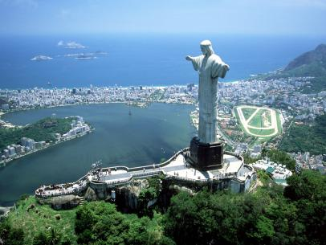

7 Wonders of World
Christ the Redeemer statue
Christ the Redeemer statue, Rio de Janeiro:
Christ the Redeemer, a colossal statue of Jesus, stands atop Mount Corcovado in Rio de Janeiro. Its origins date to just after World War I, when some Brazilians feared a “tide of godlessness.” They proposed a statue, which was ultimately designed by Heitor da Silva Costa, Carlos Oswald, and Paul Landowski.

Construction began in 1926 and was completed five years later. The resulting monument stands 98 feet (30 meters) tall—not including its base, which is about 26 feet (8 meters) high—and its outstretched arms span 92 feet (28 meters). It is the largest Art Deco sculpture in the world. Christ the Redeemer is made of reinforced concrete and is covered in approximately six million tiles. Somewhat disconcertingly, the statue has often been struck by lightning, and in 2014 the tip of Jesus’s right thumb was damaged during a storm.